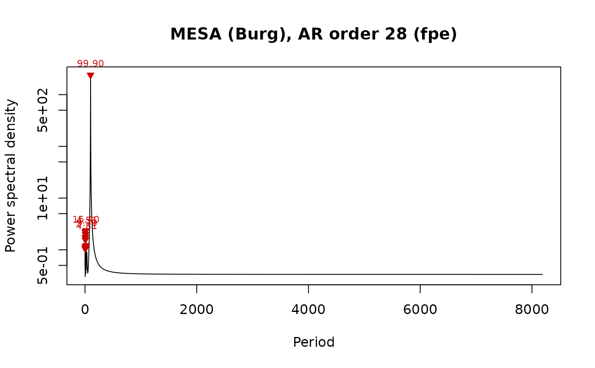

Plots the power spectrum of mesa_spectrum on a logarithmic power
axis, against period or frequency, with the strongest peaks labelled.
Usage
plot_mesa_spectrum(
x,
xaxis = c("period", "frequency"),
peaks = TRUE,
n_label = 5,
xlim = NULL,
log_x = FALSE,
col = "black",
main = NULL,
...
)Arguments
- x
Maximum entropy spectrum to plot: the list returned by
mesa_spectrum. Required, no default.- xaxis
Quantity on the x axis (character):
"period"(in the depth/time unit of the input record) or"frequency"(cycles per unit).Default="period"(the first element ofc("period", "frequency")).- peaks
Mark the spectral peaks of
x$peaksthat fall insidexlimwith red triangles and label the strongest ones with their period (logical, TRUE or FALSE).Default=TRUE.- n_label
Number of strongest peaks (inside
xlim) that are labelled with their period (integer, >= 0).Default=5.- xlim
Range of the x axis, in the unit of
xaxis(numeric vector of length 2);NULLuses the full range of positive frequencies (or the corresponding periods).Default=NULL.- log_x
Draw the x axis on a logarithmic scale (logical, TRUE or FALSE); the power axis is always logarithmic.
Default=FALSE.- col
Colour of the spectrum line (a colour name, hexadecimal string or number).
Default="black".- main
Title of the plot (character);
NULLgives a title with the AR order and the order-selection criterion.Default=NULL.- ...
Further graphical arguments passed to
plot(e.g.lwd,ylim).
Examples
set.seed(1)
t <- seq(0, 600, by = 2)
y <- sin(2 * pi * t / 100) + rnorm(length(t), sd = 0.5)
plot_mesa_spectrum(mesa_spectrum(data.frame(t, y)))
